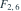

U与V独立， 。
。 的分布为？
的分布为？
。 的分布为？- A

- B
- C
- D
我已思考，展开答案与解析
正确答案：C
- 卡方分别等价于同一速率1/2、形状1和3的Gamma变量。
- 独立、同速率Gamma变量的占比服从Beta，形状参数保留为1和3。
易错提醒Beta参数是卡方自由度的一半；这里分母是U+V，不是V。
考后回忆 · 条件重建 · 回忆9；与次序统计量Beta知识相衔接
依据考试回忆重建；数字、选项和必要条件为补充设定，非原题。
。 的分布为？
考后回忆 · 条件重建 · 回忆9；与次序统计量Beta知识相衔接
依据考试回忆重建；数字、选项和必要条件为补充设定，非原题。